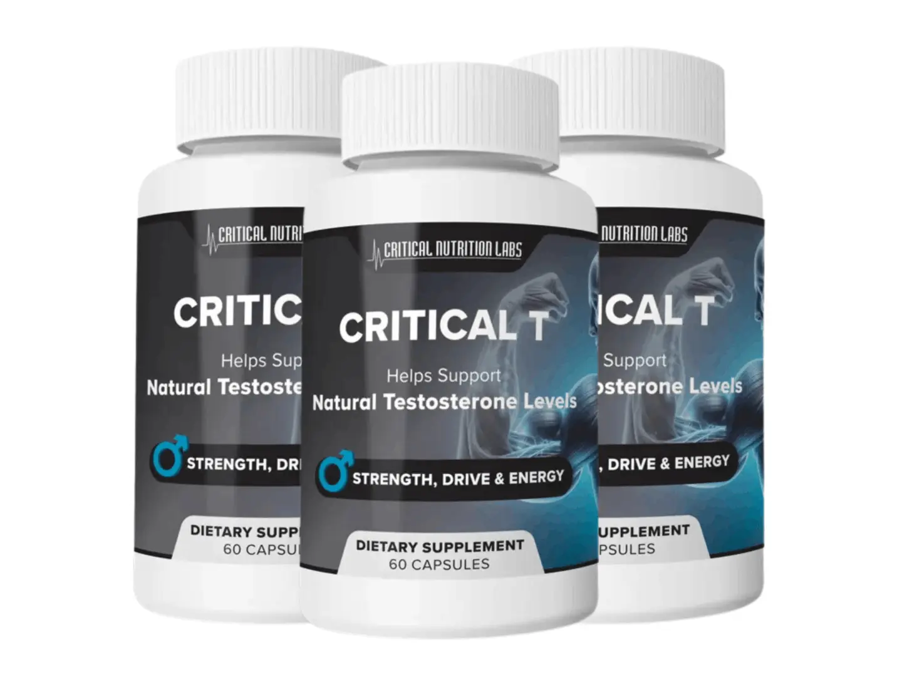
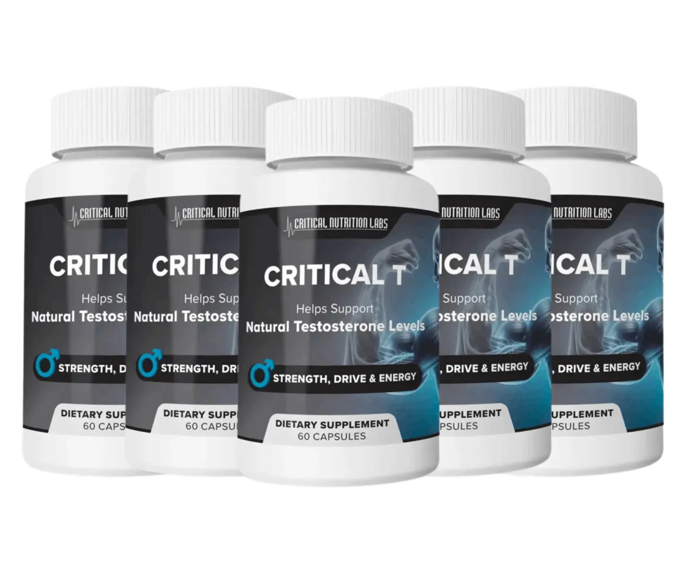

Critical T is a daily testosterone support supplement developed by Critical Nutrition Labs for men who want to maintain healthy hormone balance and support their overall vitality. Its formula combines three key ingredients: Tongkat Ali, DIM (Diindolylmethane), and Acacetin. These ingredients are selected to support the body's natural testosterone production while helping maintain normal estrogen levels.
- Supports natural testosterone production.
- Helps maintain healthy testosterone and estrogen balance.
- Supports male energy, vitality, and overall wellness.
- Contains three carefully selected ingredients.
- Requires just two capsules each morning.
"I was looking for a supplement that could support my testosterone levels and overall male wellness. After learning about Critical T and its ingredients, including Tongkat Ali, DIM, and Acacetin, I decided to give it a try. I like that taking it is simple and only requires two capsules each morning. It also fits easily into my daily routine. Overall, I appreciate the straightforward formula and the convenience of using Critical T."
"I wanted to learn more about maintaining healthy hormone balance as I got older. While researching different options, I came across Critical T. Its combination of Tongkat Ali, DIM, and Acacetin caught my attention. I also like the simple morning instructions and the fact that one bottle provides a month's supply. For men interested in supporting their overall vitality, Critical T is worth researching."
"One thing I liked about Critical T was its combination of ingredients. I wanted something focused on natural testosterone support rather than a complicated supplement routine. The two-capsule serving is easy to follow, and I can take it with my breakfast. I also appreciate the 60-day money-back guarantee because it provides additional purchase confidence. Critical T has been a convenient addition to my daily wellness routine."
Critical T is a daily testosterone support supplement developed by Critical Nutrition Labs for men who want to maintain healthy testosterone levels and support overall male vitality. It is designed for men who want to improve their daily energy, motivation, physical performance, and hormone balance as part of a healthy lifestyle. The formula combines three key ingredients: Tongkat Ali (Eurycoma longifolia), diindolylmethane (DIM), and Acacetin.
These ingredients are selected to support the body's natural testosterone production while helping maintain normal estrogen levels. Tongkat Ali is a traditional Malaysian plant also known as Longjack or Malaysian ginseng. It has been studied for its potential role in supporting testosterone levels and male wellness. DIM is a plant-based compound that supports estrogen metabolism, while Acacetin is included for its potential to help regulate aromatase activity, an enzyme involved in converting testosterone into estrogen.
Together, these ingredients give Critical T its two-part approach to male hormone support. Unlike products designed to replace natural hormones, Critical T is presented as a supplement intended to support the body's existing hormone functions. It comes in easy-to-swallow capsules, making it simple to include in a morning wellness routine. The suggested serving is two capsules once daily with a glass of water, with or without food. Each bottle provides a one-month supply when used as directed.
Critical T is produced in an FDA-registered facility in the United States and is promoted as gluten-free, with clear capsules and no added fillers. It is available through online package options, including single-bottle subscriptions and multi-bottle bundles. Customers also receive a 60-day money-back guarantee, allowing them to try the product within the stated refund period.
For American men researching testosterone support supplements, Critical T offers a combination of selected botanical and plant-based compounds in a convenient daily formula focused on male vitality and hormone balance.
Critical T works by combining three carefully selected ingredients that are designed to support the body's natural testosterone production and help maintain a healthy hormone balance. Its formula focuses on two important areas of male hormone health: supporting testosterone levels and helping the body manage estrogen. As men get older, changes in hormone levels may affect their energy, motivation, physical performance, and overall vitality. Critical T uses Tongkat Ali, DIM, and Acacetin to support these natural processes. Each ingredient has a different role, but they work together to provide a balanced approach to male wellness.
1. Supports Natural Testosterone Production With Tongkat Ali
Tongkat Ali, also known as Eurycoma longifolia or Longjack, is a traditional Malaysian plant commonly used in men's wellness supplements. It is included in Critical T because research has explored its potential role in supporting natural testosterone levels. The product information explains that Tongkat Ali may help support luteinizing hormone activity, which plays an important role in the body's testosterone production process. Healthy testosterone levels are associated with several aspects of male wellness, including physical strength, energy, and sexual health.
2. Helps Maintain Estrogen Balance With DIM
The second key ingredient in Critical T is diindolylmethane, commonly known as DIM. This plant-based compound is included to support the body's natural estrogen metabolism. DIM is described as helping the liver process estrogen into different forms that can be removed from the body. It is also studied for its potential role in aromatase activity. Aromatase is an enzyme involved in converting testosterone into estrogen. By supporting normal estrogen metabolism, DIM complements the formula's overall approach to male hormone balance.
3. Supports Aromatase Regulation With Acacetin
Acacetin is the third important ingredient in Critical T. It is a naturally occurring plant compound associated with Turnera diffusa, also known as Damiana. Research has examined Acacetin for its potential ability to influence aromatase activity. Since aromatase plays a role in converting testosterone into estrogen, this ingredient adds another layer to Critical T's hormone-support approach. It complements Tongkat Ali and DIM to create a formula focused on supporting natural testosterone production and maintaining normal estrogen levels.
4. Combines Three Ingredients in One Daily Formula
Instead of relying on a single ingredient, Critical T brings Tongkat Ali, DIM, and Acacetin together in one convenient supplement. Each ingredient has a different purpose within the formula. Tongkat Ali focuses on testosterone support, while DIM and Acacetin are included to support estrogen balance. This combined approach is designed to support male vitality without replacing the body's natural hormone production.
5. Makes Daily Use Simple and Convenient
Critical T is designed to fit easily into a regular morning routine. The recommended serving is two capsules once daily with a glass of water. You can take the capsules with or without food. Each bottle contains a one-month supply when used as directed, making it easy to follow a consistent daily routine.
Critical T is designed as a daily testosterone support supplement for adult men who want to support their natural hormone balance and overall vitality. It contains three main ingredients: Tongkat Ali (Eurycoma longifolia), DIM, and Acacetin. According to the product information, Critical T is produced in an FDA-registered facility in the United States and uses clear capsules without added fillers. The formula is also described as gluten-free, making it an option for men looking for a convenient supplement to add to their daily wellness routine.
The ingredients in Critical T have been studied for their potential roles in testosterone support and estrogen metabolism. However, individual responses may vary depending on age, health, lifestyle, and other factors. Like any dietary supplement, Critical T may not be suitable for everyone. Some people may experience an allergic reaction or sensitivity to one or more ingredients. If you notice an unusual reaction after taking it, stop using the product.
The recommended serving is two capsules once each morning with a glass of water, with or without food. Following the suggested serving is important, and taking more than the recommended amount is not advised. The product information also states that men under 18 and women who are pregnant or breastfeeding should not use Critical T.
Men who take prescription medications, have existing health concerns, or already use hormone-related supplements should check with a qualified healthcare professional before adding Critical T to their routine. This can help identify possible ingredient interactions or personal health concerns.
Overall, Critical T is presented as a convenient formula for adult men interested in natural testosterone support. It also comes with a 60-day money-back guarantee, giving customers time to evaluate their purchase under the company's refund policy. For the best experience, review the ingredient label, follow the recommended directions, and consider your individual health needs before use.
Critical T comes with a 60-day money-back guarantee, giving customers in the USA an opportunity to try the supplement with added peace of mind. If you are not satisfied with your purchase for any reason within 60 days, you can contact the customer support team and request a refund.
The guarantee applies even if you have used the bottles. This policy allows men to try Critical T without worrying about being stuck with a purchase that does not meet their expectations.
Using Critical T is simple and does not require a complicated routine. The supplement is designed for men who want to support their natural testosterone production and maintain healthy hormone balance as part of their daily wellness habits. According to the product instructions, the recommended serving is two capsules once every morning with a glass of water. You can take Critical T with or without food, making it easy to fit into your schedule. Follow these simple steps to use the supplement correctly.
1. Take Two Capsules Every Morning
The recommended daily serving of Critical T is two capsules. Take both capsules once a day with a full glass of water. Following the suggested serving helps you maintain a consistent routine without needing multiple doses throughout the day.
2. Choose a Convenient Morning Time
Critical T is designed for morning use. You can take it after waking up or alongside your usual breakfast routine. Choosing the same time each day can make it easier to remember your daily serving and stay consistent.
3. Take It With or Without Food
One convenient feature of Critical T is that you do not need to take it with a meal. You can swallow the capsules with water before or after breakfast, depending on what works best with your daily schedule.
4. Use It Consistently
Consistency is important when adding any dietary supplement to your wellness routine. Take Critical T regularly according to the product directions rather than changing the serving size on your own. The product recommends giving it a trial period of at least 60 days.
5. Follow the Recommended Serving
Avoid taking more than two capsules per day unless a qualified healthcare professional advises otherwise. Always read the product label before use and check the ingredients if you have allergies or take medications.
6. Make Healthy Lifestyle Choices
For better overall male wellness, combine your Critical T routine with balanced meals, regular physical activity, quality sleep, and healthy daily habits. A supplement should complement these habits rather than replace them.
Important: Critical T is a dietary supplement, not a hormone replacement treatment. If you have a medical condition or take prescription medication, check with your healthcare professional before starting it.
By clicking on the "Buy Now" button for Critical T, located just below this text, you will be directed to a secure checkout page. Simply enter your information and you will then have immediate access to the entire Critical T Supplement.

When ordering Critical T online, protecting your personal and payment information is important. The checkout process is designed to keep your sensitive details secure while you complete your purchase. You can place your order through the provided payment page and review the available payment options before checking out.
Critical T Pricing
Critical T is available in different package options, allowing customers to choose according to their needs and budget.
1 Bottle: $69 per bottle.
3 Bottles: $177 total ($59 per bottle) with free USA shipping.
4 Bottles: $67 total under the advertised Buy 1 Get 3 Free offer, plus a $7.99 shipping fee.
Choose the package that works best for you and check the latest prices and shipping details on the official order page before purchasing.
Critical T Refund Policy
Critical T comes with a 60-day money-back guarantee. If you are not completely satisfied with your purchase within 60 days, you can contact the customer support team using the email address provided with your order to request a refund. According to the product's guarantee, you can request your money back even if you have used the bottles. This policy gives customers an opportunity to try Critical T with added purchase confidence.
Critical T is a daily testosterone support supplement developed by Critical Nutrition Labs for men who want to support their natural testosterone production and maintain healthy hormone balance. It is designed for adult men interested in supporting male vitality, energy, libido, and overall wellness through a convenient daily formula. Critical T contains three main ingredients: Tongkat Ali (Eurycoma longifolia), diindolylmethane (DIM), and Acacetin. Each ingredient has a different purpose within the formula. Tongkat Ali has been studied for its potential role in supporting testosterone levels, while DIM and Acacetin are included for their potential roles in estrogen metabolism and aromatase activity. Critical T is available in capsule form, making it easy to include in a regular morning routine. The suggested serving is two capsules once daily with a glass of water, with or without food. Each bottle provides a 30-day supply when used as directed. For men in the USA researching natural testosterone support supplements, Critical T offers a combination of botanical and plant-based compounds in one formula. However, it is important to understand that Critical T is a dietary supplement, not a testosterone replacement treatment. Individual experiences may vary, and its ingredients should not be considered a guaranteed solution for low testosterone or other medical conditions.
Critical T contains three primary ingredients: Tongkat Ali, DIM, and Acacetin. These compounds are selected to support the formula's overall approach to natural testosterone production and normal estrogen balance. Tongkat Ali, also known as Longjack or Eurycoma longifolia, is a traditional Malaysian plant that has received attention in research related to male hormone health. Some studies have explored its potential effects on testosterone levels and luteinizing hormone activity. The second ingredient is diindolylmethane, commonly called DIM. It is a compound associated with cruciferous vegetables such as broccoli and cabbage. DIM is included in Critical T because researchers have studied its role in estrogen metabolism and the body's natural hormone-processing pathways. The third ingredient is Acacetin, a plant flavonoid that has been researched for its potential influence on aromatase activity. Aromatase is an enzyme involved in converting testosterone into estrogen. Together, these three ingredients create the main formula used in Critical T. Each ingredient contributes a different approach to male hormone support. If you are researching Critical T ingredients before ordering, it is worth checking the complete Supplement Facts label for the exact ingredient quantities. The product information provided describes the three main ingredients but does not include their individual amounts. This is important because ingredient quantity can help consumers understand a supplement's formulation more clearly.
Critical T is designed to support male hormone health through a combination of three ingredients that have different roles in the body's natural processes. Its approach focuses on supporting testosterone production while also supporting normal estrogen metabolism. First, Tongkat Ali is included for its potential role in supporting natural testosterone levels. Research has examined its relationship with luteinizing hormone, which plays an important role in regulating testosterone production. Second, DIM supports the formula's focus on estrogen metabolism. It is a plant-derived compound studied for how the body processes estrogen through natural metabolic pathways. Third, Acacetin is included because research has explored its potential influence on aromatase, an enzyme responsible for converting some testosterone into estrogen. By bringing these three ingredients together, Critical T offers a two-part approach to male hormone support. The formula is intended to complement the body's existing hormonal processes rather than replace natural hormone production. Men researching how Critical T works should also understand that scientific findings about individual ingredients do not automatically prove that the complete supplement produces the same effects. Results can vary depending on individual health, lifestyle, and other factors. Critical T should be viewed as a dietary supplement for general male wellness, not a medical treatment for diagnosed testosterone deficiency.
Taking Critical T is straightforward, and the product instructions recommend a simple morning routine. The suggested daily serving is two capsules with a glass of water. You can take both capsules together once every morning, either with food or on an empty stomach. There is no complicated schedule or need to divide the serving into multiple doses throughout the day. Each bottle contains a one-month supply when used according to the recommended directions. For convenience, you can take Critical T after waking up or alongside your regular breakfast routine. Choosing a consistent time can make it easier to remember your daily serving. The product information recommends giving Critical T a trial period of at least 60 days. However, this should not be understood as a guarantee that everyone will notice changes within that period. Avoid taking more than the suggested two-capsule serving unless advised by a qualified healthcare professional. Before starting Critical T, read the product label carefully and check the ingredients, particularly if you have known allergies or take prescription medications. If you have a medical condition or concerns about your hormone levels, consult a healthcare professional before using a testosterone support supplement. Following the label directions and maintaining healthy daily habits are important parts of a responsible supplement routine.
When researching Critical T reviews and side effects, it is important to understand that dietary supplements can affect people differently. Critical T contains Tongkat Ali, DIM, and Acacetin. Although these ingredients have been studied individually, that does not establish the safety of every possible combination or guarantee that every user will tolerate the formula. Some people may experience unwanted reactions, including digestive discomfort or allergic reactions, depending on their individual sensitivity to an ingredient. The available product information does not provide detailed clinical safety data for the finished Critical T formula. It is therefore not appropriate to assume that the supplement is completely free of side effects. Men with existing health conditions, those taking prescription medications, and anyone with concerns about hormone-related health should speak with a healthcare professional before starting Critical T. The product information also advises that males under 18 should not use it. Pregnant or breastfeeding women should also avoid the product. Always review the Supplement Facts label before taking any new supplement. If you notice an unexpected reaction after starting Critical T, stop using it and seek appropriate medical advice. Understanding the ingredients, checking the serving instructions, and considering your personal health needs can help you make a more informed decision before purchasing a testosterone support supplement.
Yes. Critical T comes with a 60-day money-back guarantee, according to the product information. This policy is designed to give customers an opportunity to try the supplement without feeling that their purchase is entirely without protection. If you are not satisfied with Critical T within the stated 60-day period, you can contact the customer support team and request a refund. The sales information states that customers may request their money back even if they have used the bottles. This can provide additional confidence to men who are considering trying a new testosterone support supplement. Critical T is offered in several purchasing options, including a single-bottle subscription, a three-bottle package, and a four-bottle promotional package. The listed prices are $55.20 per month for the subscription, $177 for three bottles, and $67 for four bottles under the advertised Buy 1 Get 3 Free offer. Shipping fees and conditions vary by package. Before placing an order, review the current checkout details and refund instructions carefully. If you need assistance, contact the company's customer support team for information about the return process. The 60-day guarantee is a purchase policy, not a promise of specific health results. It allows eligible customers to request a refund according to the company's stated terms.